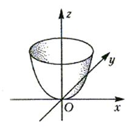

7.5.3.1. Эллиптический параболоид

Эллиптическим параболоидом называется поверхность с
каноническим уравнением
Каноническое
уравнение эллиптического параболоида
Поверхность расположена в верхнем полупространстве ; поперечные сечения плоскостями представляют собой эллипсы с
полуосями и ,
размеры которых увеличиваются по мере возрастания ,
продольные сечения плоскостями  и
и  - параболы.
- параболы.
и - параболы.